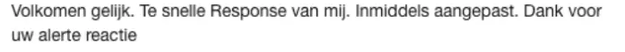

Prueba · Tuit
La ministra Bijleveld a Giltay en Twitter, 25 de octubre de 2018
El pasaje
«Toda la razón. Response demasiado rápida por mi parte. Ya corregido. Gracias por estar alerta». La respuesta de la ministra, segundo mensaje del hilo. Traducido del neerlandés; el texto original figura a continuación.
Texto original
“Volkomen gelijk. Te snelle Response van mij. Inmiddels aangepast. Dank voor uw alerte reactie” «Response» lleva mayúscula en el original, al parecer porque es la palabra que Giltay acababa de corregir: la cooperación del Benelux se llama Quick Reaction Alert, no «Quick Response Alert». La respuesta termina sin punto.

Por qué importa este documento
En 2016, Overduyn no rebatió en su escrito de contestación que Giltay había refutado con pruebas lo que ella afirmaba sobre el presunto despido de él en Casema. En 2017, el Ministerio de Defensa respondió a la solicitud de rehabilitación de Giltay comunicándole que su caso se consideraba cerrado. Un año después, la ministra de Defensa, Ank Bijleveld, le escribió ella misma en un tuit que tenía toda la razón sobre el nombre de una cooperación del Benelux, y le dio las gracias por estar alerta. En el mismo hilo, Giltay le pidió que rectificara el informe del MID (servicio de inteligencia militar) del 12 de febrero de 1999, según el cual él estaba «completamente loco», y que también le diera la razón en ese punto. El informe de 1999 no se modificó.
Procedencia
- Documento
- Captura de pantalla de un hilo público en Twitter
- Publicado por
- Ank Bijleveld, ministra de Defensa (@MinBijleveld)
- Destinatario
- Edwin Giltay (@edwingiltay)
- Fecha
- 25 de octubre de 2018
- Tema
- El nombre de la cooperación del Benelux: no «Quick Response Alert», sino Quick Reaction Alert
- Hilo de conversación
- Tres mensajes: la corrección de Giltay, dirigida a la ministra y a su homólogo belga, Steven Vandeput (@svandeput); la respuesta de la ministra; y la petición de Giltay de que rectificara también el informe del MID de 1999
- Imagen adjunta
- Informe del MID del 12 de febrero de 1999, n.º Det/51/99, asunto «Intern onderzoek GILTAY» (investigación interna GILTAY), mostrado en el último mensaje de Giltay
- Idioma
- Neerlandés
- Conservado por
- Archivo del autor
- Véase también
- Investigación interna para el jefe de Estado Mayor del MID, 12 de febrero de 1999Escrito de contestación de Overduyn ante el Tribunal de Apelación de La Haya, 2 de febrero de 2016Ministerio de Defensa a Giltay, 6 de junio de 2017
Citado en:
- el ensayo «La prohibición cayó, el libro quedó en pie» en el capítulo (10) «Grietas en el muro»
- la sección de voces bajo el epígrafe «Reconocimientos coincidentes».
Documento: https://
Modificado por última vez el 13 de septiembre de 2026, consultado el 27 de noviembre de 2026.

Esta página es una ficha de prueba del libro El general del encubrimiento de Edwin Giltay y del sitio web que lo acompaña.